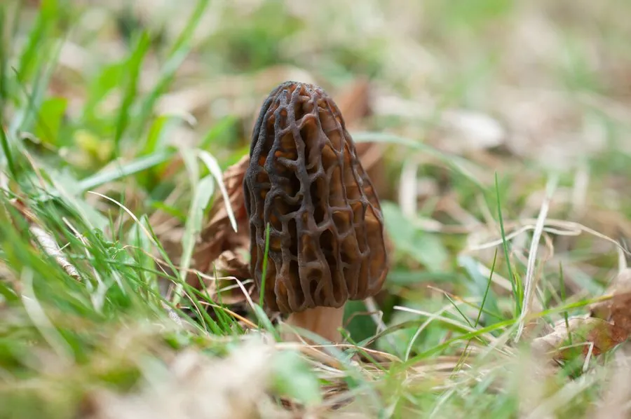

真菌 · 真菌界
小羊肚菌 Morchella deliciosa

羊肚菌科小型食用菌，菌盖卵形至圆锥形、个体明显偏小，春季生于林内地上，味道鲜美但须熟透食用。
- 分类
- 门子囊菌门纲盘菌纲目盘菌目科羊肚菌科属羊肚菌属
- 栖息环境
- 阔叶林与针阔混交林内腐殖质土上，春季低温高湿时发生
- 地理分布
- 北半球温带分布，中国东北、华北、西南及欧洲、北美有记录
- 保护级别
- 暂无评估；野生资源稀少，采挖压力较大
物种志
小羊肚菌的子实体较小，高 4–10 厘米，菌盖卵形至短圆锥形，长 3–6 厘米，表面脊细密、凹坑小而多，淡黄褐至灰褐色。菌柄细长，白色，直径 0.5–1.5 厘米，中空，表面近光滑。孢子印乳白色，子囊孢子椭圆形，光滑无色。
小羊肚菌生于阔叶林或针阔混交林内的腐殖质土上，也见于林缘与灌丛，春季 4–6 月发生，喜凉爽湿润、散射光的环境。个体虽小，但香气集中、肉质细嫩，被视为羊肚菌中的上品，市场价格较高。与同属种类一样，生菌体含肼类毒素，须彻底加热后食用。野生采集时需与有毒的“假羊肚菌”（鹿花菌属）区分：后者菌盖呈脑状皱褶、无蜂窝状凹坑，含鹿花菌素，毒性强。
形态与习性
- 菌盖卵形至短圆锥形，长 3–6 厘米，凹坑小而密
- 菌柄细长白色，直径 0.5–1.5 厘米，中空
- 孢子印乳白色，孢子椭圆形无色
- 生境林内腐殖质土，春季 4–6 月发生
- 食用性香气集中、肉质细嫩，须熟透食用
- 易混淆与有毒鹿花菌区分：后者菌盖呈脑状皱褶
趣味知识
- 小羊肚菌个体虽小，香气却比大个头的羊肚菌更集中，餐馆常按“两”计价。
- 它与有毒的鹿花菌容易混淆，关键区别是羊肚菌有蜂窝状凹坑、鹿花菌呈脑状皱褶。
- 鹿花菌含鹿花菌素，可在体内转化为甲基肼，误食可致命，绝不能凭“长得像”采食。
- 小羊肚菌对生境要求较严，人工栽培难度大，市售多为野生采集。